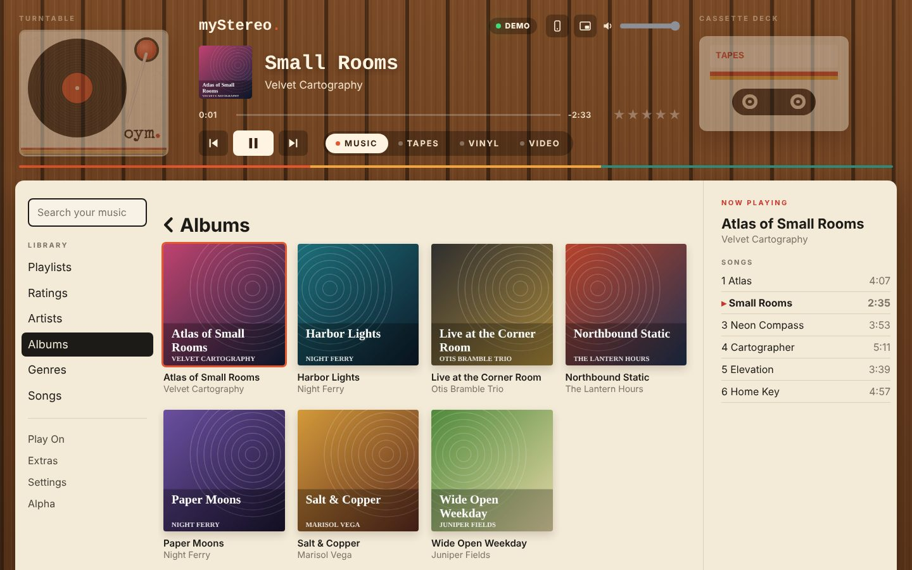
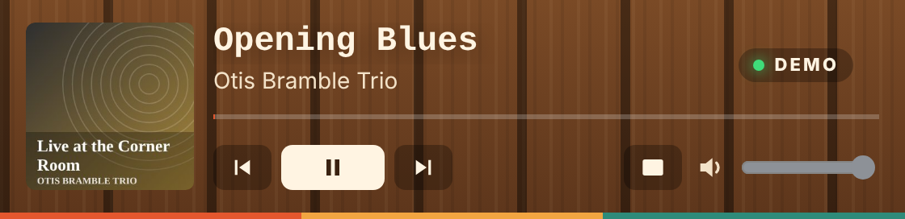

Chapter 1
Getting Started
Put myStereo on your Home Screen, sign in to your own Plex server, and your collection is in your pocket.
Add myStereo to your Home Screen
- iPhone: open myStereo’s web address in Safari, tap the Share button, then Add to Home Screen.
- Android: open it in Chrome, tap the ⋮ menu, then Add to Home screen or Install app.
- Open myStereo from its new icon. It runs full screen, just like an app. On Android, the phone’s back button steps back through myStereo’s menus.
Sign in to Plex
- Go to Settings › Your Music › Plex › Sign In with Plex.
- Tap Open Plex sign-in and sign in on the Plex page.
- Come back to myStereo. It finds your server on its own.
No Plex? Use music on this phone
- Tap the source light at the top of the screen until it says PHONE, open Music, then Add Files. (Not signed in? It’s right on the sign-in screen as Music on This Phone.)
- Pick songs from the Files app. You can choose many at once. On a computer or Android phone, Add a Folder brings in a whole folder.
- myStereo reads each song’s name, artist, album and cover art, and keeps its own copy, so it plays even with no internet.
Chapter 2
The Knob and Buttons
Turn the knob to scroll. Press its center to choose. The buttons around it do the rest.
- Select
- Press the center of the knob to choose what’s highlighted. On Now Playing it says Mode; on a record it turns the sleeve over.
- Back
- The lit button in the middle of the row. It’s the same reach for a left or right thumb.
- Home
- Back to the main menu, the screen labeled myStereo, from anywhere.
- Video
- Your Plex movies and shows.
- Extras, Setup
- Jump straight to that part of myStereo from anywhere. The one you’re in lights up.
- Previous, Play / Pause, Next
- The three buttons along the bottom. Previous restarts the song first, then goes back a song.
Music, Tapes, Vinyl
The three inputs under the screen, like the input buttons on a receiver. The one you’re listening to lights up.
- Music
- Your library: artists, albums, playlists and everything else. See Finding Music.
- Tapes
- Your mixtapes, on Flipside’s cassette deck. See Tapes.
- Vinyl
- Whole albums on the turntable, a side at a time. See Vinyl.
The source light
The little light at the top of the screen, next to the clock, says where the music is coming from.
- Green · PLEX
- Your Plex server. It says DEMO while you’re trying the demo library.
- Blue · PHONE
- Music saved on this phone.
- Purple · NET
- Your network share.
- Orange · TAPE
- A tape playing in Tapes.
Tap the light to switch where Music plays from. It’s also in Settings › Your Music › Play From. While a song plays, the light shows where that song is coming from.
Or just touch the screen
- Choose
- Tap any item.
- Scroll
- Drag the list up or down.
- Go back
- Tap the title bar, or press Back.
Chapter 3
Finding Music
Everything starts in Music.
- Genres
- Every genre in your library. Pick one for Shuffle Songs, or browse its Artists, Albums, and Songs.
- This phone
- Music stored on this phone (albums you saved from Plex and files you added) is in Music when the source light says PHONE. Tap the light to switch.
- ♥ For a Tape
- On the main menu: the songs you’ve saved with ♥ TAPE for your next mixtape.
- Search
- Type with the iPhone keyboard. Results show genres, artists, albums, and songs.
- Shuffle Songs
- On the main menu. Plays your library in random order.
- Now Playing bar
- Shows on every menu while music plays. Tap it to jump to Now Playing.
On Phone: music with no signal, no data
Save albums and playlists to your phone before a road trip, a flight or a weekend at the cabin. Music on your phone plays with no signal and uses none of your data plan.
- Open any album or playlist and scroll to the bottom. The last row says Save to Phone. Choose it.
- The Saving screen shows which song it’s on and how far along it is.
- Keep myStereo open while it saves. Your screen stays on by itself. If you leave the app or the phone sleeps, it picks up where it left off when you come back.
- When it’s done, the album says Saved to Phone ✓. Tap the source light to PHONE and open Music to find everything, together with any files you added yourself.
- The offline sign
- A small cloud with a line through it shows in the corner, and “Offline · no data used” shows on Now Playing, whenever the song is coming from your phone instead of streaming.
- No signal
- Open Music with no connection and myStereo plays what’s on your phone.
- Quality
- Settings › On Your Phone › Quality. High (the default) sounds the same on earbuds and in the car. Original keeps the full file from Plex and takes about three times the room. Space Saver fits about three times as much.
- Play Saved Copies First
- On from the start. Songs you’ve saved play from your phone even when you have a signal, which saves your data plan.
- Keep 5-Star Songs
- Turn it on and every song you rate five stars is saved to your phone on its own.
- Erasing
- Settings › On Your Phone shows how much room saved music is using and how much is left. Erase an album or everything. Your Plex library isn’t touched.
Chapter 4
Now Playing
On Now Playing, the button row becomes Scrub · Rate · Back · Shuffle · Repeat, with ♥ Tape at the end. Tap one and the knob controls it, or press Mode in the knob’s center to step through them. A light shows which one the knob is set to.
- Scrub
- Turn the knob to move through the song.
- Rating
- Turn the knob or tap a star to give the song 1 to 5 stars. Turn all the way down to clear it. The stars then show under the album name.
- Shuffle
- Off, or Songs. Starts with the song you picked, then mixes the rest.
- Repeat
- Off, Track (this song again), or Album (the whole list again).
You can also tap a choice right on the screen. Tap the lit button again, or wait a few seconds, and the knob goes back to Normal.
- ♥ Tape
- Saves the song for your next mixtape. See Tapes.
- VU meters
- The two needles under the art swing with the music. Turn them off under Settings › Look › VU Meters.
What’s playing next
On Now Playing, tap the album art. You’ll see the whole album or list that’s playing, with the current song marked ♪. Tap any song to jump to it.
Ratings and rated playlists
Music › Ratings turns your stars into playlists that update themselves: My Top Rated (4 and 5 stars), one list for each star count, and Recently Rated. Each list starts with Shuffle, and they play on Plexamp too.
Chapter 5
Tapes
Mixtapes live in Flipside, our cassette deck. Press TAPES under the screen and Flipside opens right here, on its deck.
- Press TAPES. The deck fills the screen. If no tape is in, the rack opens so you can load one.
- Play it with the deck’s own keys: PLAY, REW, FF, STOP/EJECT and FLIP.
- Tap ‹ myStereo under the Flipside name to come back. The tape keeps playing, and the source light says TAPE.
- Making tapes
- Press REC on the deck for a new blank tape, or Menu to turn Flipside over to its Workbench. Flipside has its own User’s Guide under Menu › Settings › Help & About.
- One at a time
- Start a song on myStereo and the tape stops. Start the tape and myStereo stops.
- Same sign-in
- Tapes uses myStereo’s Plex sign-in and the songs on this phone. There’s nothing to set up twice.
- On all your devices
- Signed in to Plex, every tape is saved to Plex as a playlist, so it shows up in the Flipside app and on your other devices too. Tapes made with songs on this phone stay on this phone. Move them with Back Up My Tapes and Open a Backup.
- Its own look
- Flipside keeps its own deck colors and looks, under Menu › Settings › Look. Your faceplate doesn’t change them.
- Older tapes
- Made tapes in myStereo before they moved to Flipside? They come along the first time you open Tapes.
- ♥ TAPE
- Hear a song you want on a tape? Press ♥ TAPE on Now Playing. It goes on your For a Tape list in Plex and waits for you on Flipside’s Workbench.
Chapter 6
Vinyl
Put on a whole album, one side at a time, the way a record plays. Press VINYL under the screen.
- Put on a Record
- myStereo pulls an album off your shelf for you. Put It On starts at Side A, or pick any side. Another One pulls a different record.
- Crates
- Your albums, sorted into crates by genre.
- Find a Band
- Type a few letters of a band’s name and pick the record.
- Turntable
- Choose the deck your records spin on.
- Recently Spun
- The records you’ve played lately.
Playing a record
An album is split into sides, like an LP. A side plays straight through. There’s no skipping or scrubbing on a record, not even from the lock screen.
- FLIP
- At the end of a side the record stops, like a real one. Press FLIP for the next side.
- SIDES
- Jump to any side of the record that’s playing. The needle drops at the top of it.
- DECK
- Change the turntable.
- The sleeve
- Press the center of the knob to turn the sleeve over: every side’s songs, the one playing, the pressing and how many times you’ve spun it. Press again to go back to the record.
- Play / Pause and ♥ TAPE
- The two keys along the bottom. ♥ TAPE saves the song that’s playing to your For a Tape list.
- Pressings
- Each album gets its own pressing: black, a color, clear or tie-dye. Holiday albums get holiday pressings.
- Needle drop
- The soft thump and crackle when a side starts. Turn it off under Settings › Sound › Needle Drop.
Chapter 7
Widescreen and Cover Flow
Turn your iPhone sideways and myStereo fills the screen: the song in big letters, with the album, the turntable or the tape beside it.
- Turn your phone sideways. You can also choose Widescreen Mode on the main menu.
- Tap the screen for the keys along the bottom: ⏮ ▶ PLAY ⏭. On a record you get ⇄ FLIP, ≡ SIDES and ◉ for the turntable instead of skipping. Tap the album cover to turn the sleeve over, and tap it again to turn it back.
- ◐ changes the look. Turn your phone upright, or press ✕, to go back.
- Looks
- Paper & Stripes, Album Glow, Hi-Fi, Mid-Century Walnut, Runaway Anchor, Christmas and Neon Club.
- Turntables
- Each look comes with a turntable that suits it. Pick a different one with ◉, and that look remembers it.
Cover Flow
Your albums, flipping by like a record bin. Open it from Music › Cover Flow, then turn your phone sideways.
- Swipe left or right to flip through albums. Flick to fly.
- Tap the middle album to turn it over and see its songs.
- Tap a song to play it. Turn the phone upright, or tap Done, to go back.
Chapter 8
Videos
Your movies and TV shows, right on the big display.
- Choose Videos on the main menu, then Movies, TV Shows, or Continue Watching.
- Pick something. It starts playing right on the display.
- Turn your iPhone sideways to watch full screen. Tap the video to show the controls.
- Play / Pause
- ▶❙❙ or the center of the knob.
- Title & time
- The video fills the screen. Tap the picture to show the title bar and how far along you are. They tuck away after a few seconds.
- Skip
- Turn the knob to move 10 seconds. ⏮ ⏭ jump 30.
- Stop
- BACK, or Done when you’re watching sideways.
Chapter 9
Play On Another Speaker
Use myStereo as a remote for Plexamp anywhere in the house.
- Make sure Plexamp is open on the other device.
- Go to Play On and choose it. A checkmark shows your pick.
- Everything you play now plays there. Choose This myStereo to play on your phone again.
AirPlay and Bluetooth
Choose Play On › AirPlay & Bluetooth and your iPhone’s own speaker list pops up: HomePods, Apple TVs, AirPlay speakers, Bluetooth headphones and car stereos. Pick one and myStereo keeps playing there. It works for videos too.
Chapter 10
Extras
Games
Choose Extras › Games. There are four, and myStereo remembers your best score in each.
Brick. The classic. Turn the knob or drag on the screen to move the paddle. Press the center to launch the ball.
Music Quiz. myStereo plays a few seconds from a random song in your library. Pick its name from four choices. The faster you answer, the more points you get. Ten songs a round. It plays on your phone, so it needs your Plex library, not the demo.
Snake. Eat the dots to grow, and don’t hit the walls or your own tail. The knob becomes a d-pad with arrows on it: press its top, bottom, left or right edge to go that way. ⏮ and ⏭ still turn left and right, arrow keys work on a computer, and on the screen you can swipe the way you want to go. Press the center or tap to pause.
Minesweeper. Open every square that isn’t a mine. A number tells you how many mines touch that square. Tap to open, press and hold to plant a flag. Prefer the knob? Turn it to move the box, use ⏮ and ⏭ to jump a row, press the center to open, and ⏯ to flag.
Steering with the knob. In games, tap the top, bottom, left or right edge of the knob to use it like a direction pad.
Flip it over
Swipe sideways on the empty part of the case, like the space around the knob, and myStereo turns over to show its polished steel back, a few stickers, and the engraving: myStereo, ownyourmedia.club. Special editions have backs of their own. Swipe again to flip it back. The music keeps playing.
Secrets
Two surprises are hidden in the controls: one in the knob, one in the Back button. Patience helps with both.
Sleep Timer
Choose 15, 30, 45, or 60 minutes, or End of Song. A small moon appears in the top bar while it’s set.
Chapter 11
Settings
Settings is grouped so it’s quick to scan: Look (Music, Vinyl, Tapes, Display, Corner, Large Text, Menu Art, Turntable, VU Meters), Sound (Tone, Key Sounds, Needle Drop), Your Music (Play From, Plex, Server, Network Share, Demo Library), On Your Phone, Back Up Everything, Ratings Backup, and Help & About (the guide, About Us, and your version and what’s new).
Desktop Mode
On a computer, myStereo opens up into a walnut console built for a mouse. See Chapter 12.
Tone
Make it sound the way you like. Presets are the easy way: pick one and you hear it right away while you scroll.
- Phone Speaker
- Fills out tiny speakers.
- Earbuds
- A little more punch.
- Car
- Cuts through road noise.
- Quiet Listening
- Full sound at low volume.
- Warm · Bright
- Softer like a record, or crisp vocals and cymbals.
- Talk & Podcasts
- Clearer voices.
Prefer to fine-tune? Bass and Treble go from −8 to +8, and Loudness adds body at low volume, like the button on an old receiver. Reset to Flat puts it all back.
Look
Pick what the player wears. Music sets the look for Music and Video. Vinyl can have a look of its own: press VINYL and the player changes into it, press MUSIC and it changes back. Leave Vinyl on Same as Music if you want one look everywhere. Tapes wears whatever you picked in Flipside, so a tape always looks like your mixtape deck.
Each look comes from one of five groups, the same in myStereo and Flipside. Turn the knob to try one on, and press the center to keep it.
- OYM Players
- The three Own Your Media Club players: Club White, Club Red and Club Ink, with the oym. button, the club stripes and the cream Club screen.
- Standard
- The classic receiver in any color. Turn the knob through the colors (a ring of color shows around the knob while you pick) and press the center to keep one. The Shade row at the top makes them all lighter or darker. Black, Charcoal, Silver, White and Oat are at the bottom, plus Auto, which is white in light mode and black in dark mode. The knob and SELECT button stay the standard black, and the little lights pick up your color.
- Sport Series
- The rugged, rubber-bumpered player, also in any color from the same list.
- Seasonal Editions
- Evergreen, Gingerbread and Ugly Sweater. With Automatic on, your pick comes on November 1 and your usual looks come back January 1.
- Special Editions
- The one-of-a-kind players, plus See-Through.
- BC Edition
- JL Edition
- Away Mission
- Field Scanner
- Runaway Anchor
- Musaka Edition
- LG Edition
- See-Through
The JL Edition is a beige 1995 desktop PC, floppy drive and all. Field Scanner is a rugged sci-fi field instrument with signal-orange keys and a ridged aluminum knob. Pair it with the Field Scanner display. Runaway Anchor is navy and gold with the anchor on the knob, and the bar’s logo on the back. Musaka Edition is gunmetal with a gold-ringed knob. LG Edition is a chrome laser-sword hilt with blue keys. Every edition wears its own knob and button.
Had a color picked before? It’s still there, now as a Standard color.
Display
The screen’s look, separate from the faceplate. Club is cream with the club stripes; the OYM Players use it on Auto. Light is black lettering on white, Dark is white on black. LCD is the pale green of an old car stereo, Amber and Teal glow like a hi-fi display. Classic LCD and Mini LCD are throwbacks to small players. The two Auto choices follow your phone’s light or dark setting. Special Editions at the bottom has Starship Console and Field Scanner, a glowing teal readout with scan lines, Runaway Anchor in navy and gold, and Blade, glowing white-blue lettering on deep black.
- Server
- Switch between Plex servers. Each one remembers its music library.
- Corner
- What shows in the top-right corner of the screen: the time, a little equalizer that dances while music plays, both (the clock that turns into the equalizer while music plays), the phone or Plexamp player the music is going to, or nothing.
- Turntable
- The deck your records spin on in Vinyl.
- VU Meters
- The needles that swing with the music on Now Playing.
- Menu Art
- Album art drifting beside the main and Music menus. Off to start; turn it on here.
- Large Text
- Bigger, easier-to-read menus. On from the start.
- Key Sounds
- The little tick you hear as you scroll.
- How to Use
- A short version of this guide, right on your myStereo.
Chapter 12
Desktop Mode
On a computer, myStereo opens up into a walnut console built for a mouse. The turntable sits on the left, the cassette deck on the right, the display in the middle, and your whole library below. There’s no knob to turn. Everything is a click.

Turn it on
- Open myStereo in a browser on your computer.
- Click Switch to Desktop Mode under the player, or go to Settings › Look › Widescreen & Desktop › Desktop Mode.
- myStereo remembers your choice. Next time it opens straight onto your albums.
Across the top
- Inputs
- MUSIC, TAPES, VINYL and VIDEO, under the display. Click one to switch the whole window over to it.
- Turntable
- Click it to go to Vinyl. With a record on, it spins and shows which side is up.
- Cassette deck
- Click it to go to Tapes. With a tape playing, the tape’s name is on the cassette.
- Display
- The cover, the song and the artist, with a line underneath. Click the line to jump ahead. Click the artist to switch to the album name. Click the time to switch between time left and total time.
- Source light
- The little light that says PLEX or PHONE. If you use both, click it to switch where your music comes from.
- Stars
- Click one to rate the song. Click the same star again to take one away. Records don’t get stars.
- Play buttons and volume
- Previous, play or pause, and next on the left. Volume on the right.
Down below
- Library list
- On the left: search at the top, then the menu for whichever input is on (Playlists, Artists, Albums and the rest for Music). Play On, Extras, Settings and Alpha are at the bottom.
- The wall
- Albums show as covers. Movies and TV shows show as posters, with a red line under anything you’ve started. Click one to open it. Click the title above to go back.
- Now Playing
- The right column lists the songs on what’s playing. Click any song to jump to it. With a record on, you get Side A, Side B and the rest, plus the color of the pressing.
- Tapes
- Press TAPES and Flipside opens right in the window, and the name across the top changes to Flipside. Pick a tape from the rack and it plays through the same buttons.
The Mini Player

Click the Mini Player button next to the volume. In Chrome and Edge, the Mini Player floats in its own small window above everything else, and the big window says Playing in the Mini Player. Close it, or click Bring it back, to return. In Safari and Firefox, the window shrinks to just the bar. Click the button again for the full player.
The phone button next to the Mini Player takes you back to the handheld player.
Chapter 13
myStereo Elite
Elite isn’t a separate app anymore. It’s what myStereo does once a server is involved: sign in to Plex, or connect a network share, and the extras show up on their own.
- Network Share
- Play music from your own WebDAV server, with no Plex needed. Set it up under Settings › Your Music › Network Share, then tap the source light to NET and open Music.
- Videos on your phone
- With Plex, save a movie or episode to your phone and watch it with no connection.
- Musaka Edition
- A gunmetal faceplate with a gold-ringed knob and a dark back engraved Musaka Edition. Pick it under Settings › Look › Music › Special Editions.
- LG Edition
- A laser-sword hilt: a chrome faceplate with a black ridged grip, keys that glow blue, and the Blade display. It’s under Special Editions too.
Coming from the old myStereo Elite?
- Open your old myStereo Elite. It shows A New Home. Tap Save a Backup File.
- Tap Open myStereo, add it to your Home Screen, then go to Settings › Back Up Everything › Open a Backup.
- Sign in to Plex, and connect your network share again. Backups never carry those.
Set up a network share
- Your share needs an address that starts with https://. Tailscale, a Cloudflare tunnel or a reverse proxy can give it one.
- The server has to let myStereo in. The easiest way is a recent version of rclone:
rclone serve webdav /path/to/Music --user NAME --pass SECRET --allow-origin https://ownyourmedia.club - Go to Settings › Your Music › Network Share › Connect a Share and enter the address, username and password.
- Tap the source light to NET, open Music, pick a folder, and press Play All or Shuffle.
Chapter 14
Alpha Testing
myStereo is brand new, and you’re one of its first testers. Thank you. Your notes go straight to BC.
Send feedback
- Go to Alpha › Send Feedback, or Alpha › Share an Idea.
- Pick Something broke, An idea or I love this, and write a few words.
- Press Send to BC. Your mail app opens with the note ready. Press Send there.
What to test
Alpha › What to Test lists what BC most wants to hear about right now.
Chapter 15
Tips and Troubleshooting
- Can’t reach Plex
- Make sure your server is on and Remote Access is turned on in Plex. Then try Settings › Your Music › Plex › Reconnect.
- Song won’t play
- myStereo tries a second, converted stream automatically. If it still won’t play, the file may be damaged on your server.
- Plexamp ignores myStereo
- Open Plexamp on that device, then pick it again in Play On.
- Icon looks old
- Delete myStereo from your Home Screen and add it again from Safari. Your sign-in and settings stay.
- Black strip at the bottom
- Some iPhones keep a strip at the bottom of Home Screen apps for themselves. myStereo fits its buttons above it.
- Music stops when the screen locks
- Set Settings › Sound › Tone to Flat, then close and reopen myStereo.
- Start fresh
- Settings › Your Music › Plex › Sign Out, then sign in again.